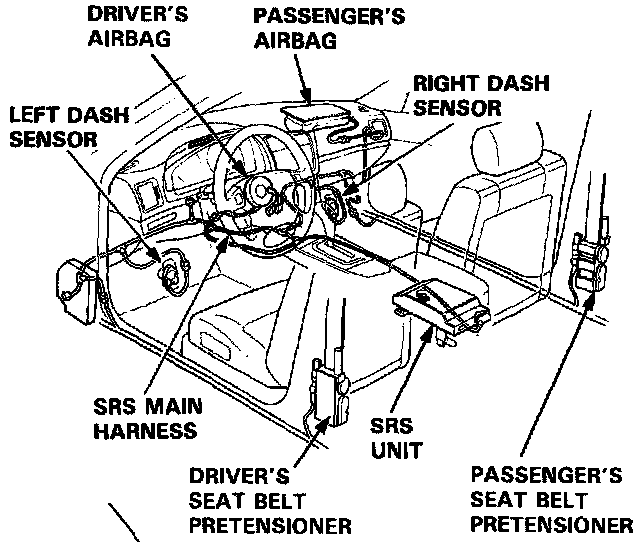
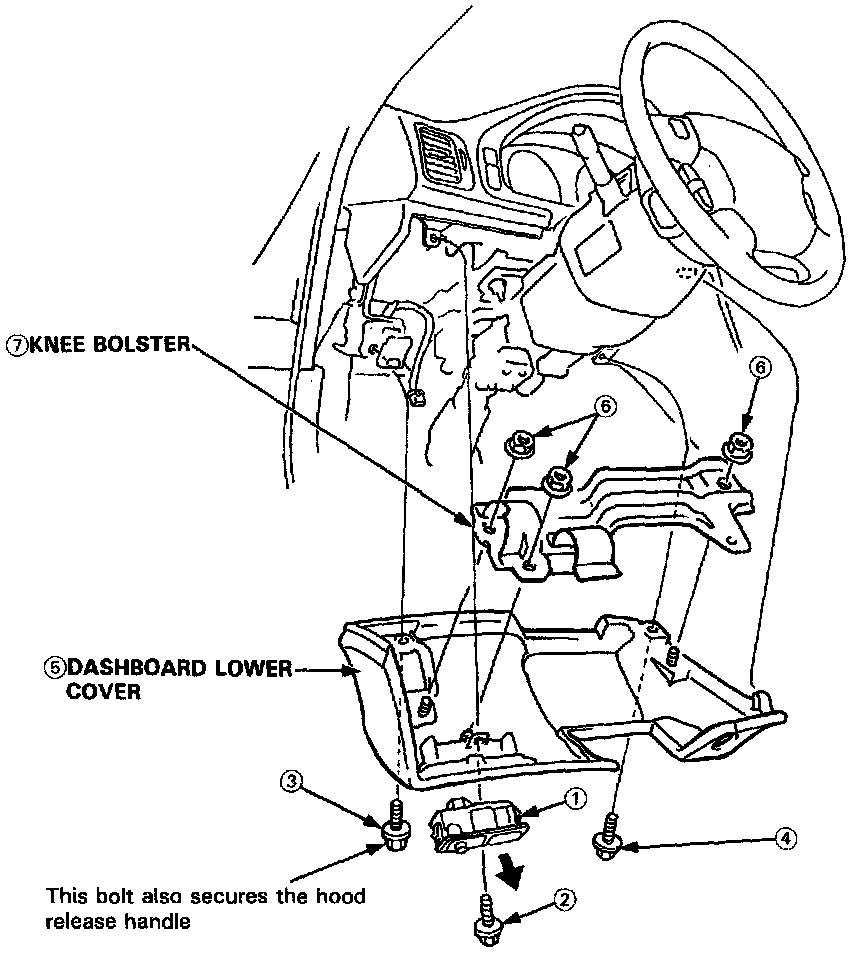
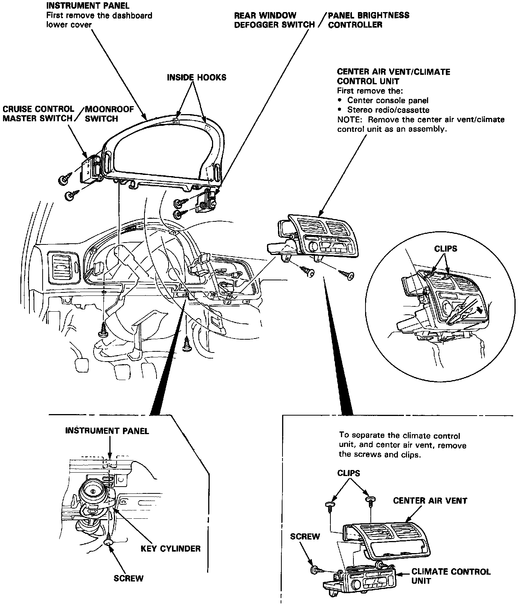
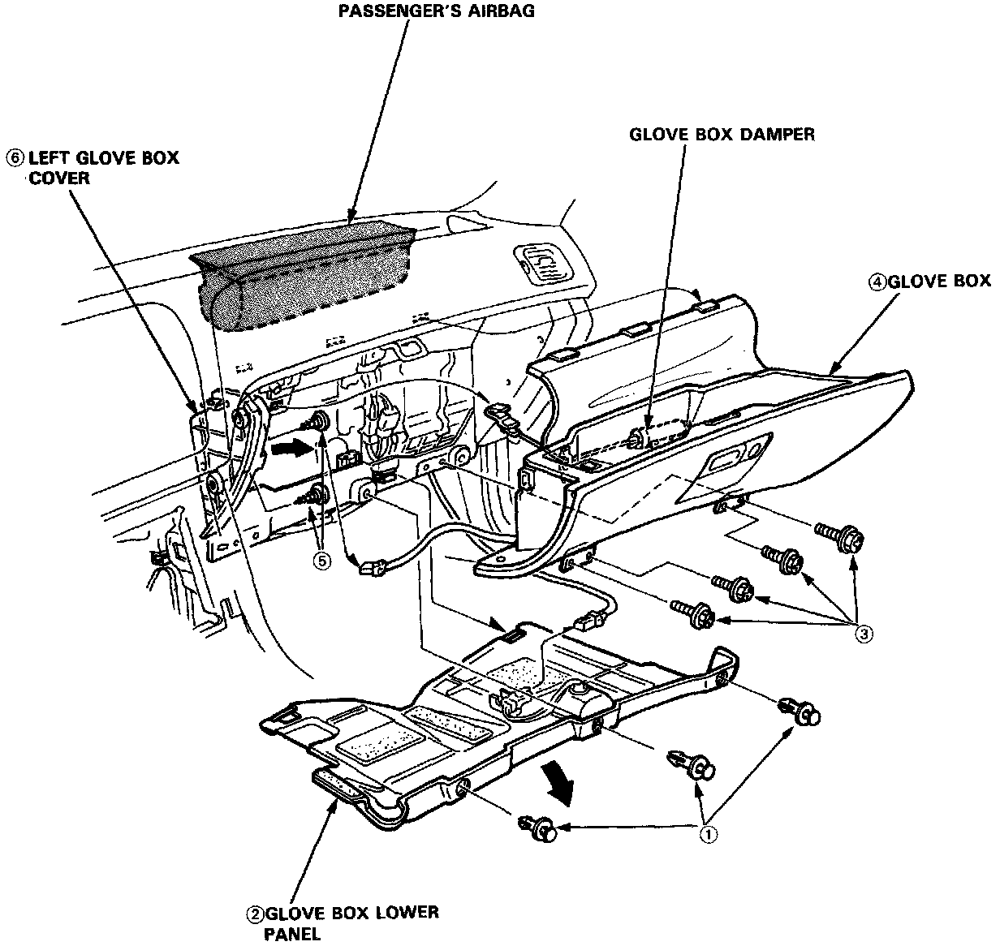

Glove Compartment: Service and Repair

NOTE: SRS wire harnesses are routed near the steering column and the passenger's side of the dashboard.
CAUTION:
- All SRS wiring harnesses are covered with yellow outer insulation.
- Before disconnecting any part of the SRS wire harness, install the short connectors.
- Replace the entire affected SRS harness assembly if it has an open circuit or damaged wiring.
Dashboard Component Removal / Installation
NOTE: Take care not to scratch the dashboard and steering column.
CAUTION: When prying with a flat tip screwdriver, wrap it with protective tape to prevent damage.
Dashboard Lower Cover:

Refer to image for removal of dashboard lower cover. Disassemble in the numbered sequence.
Instrument Panel Components:

Refer to image for removal of instrument panel components.
Passenger Side Components:

Refer to image for disassembly of glove box and lower cover.
Installation is the reverse order of removal.